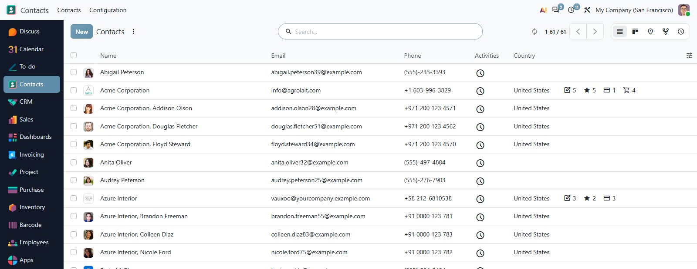
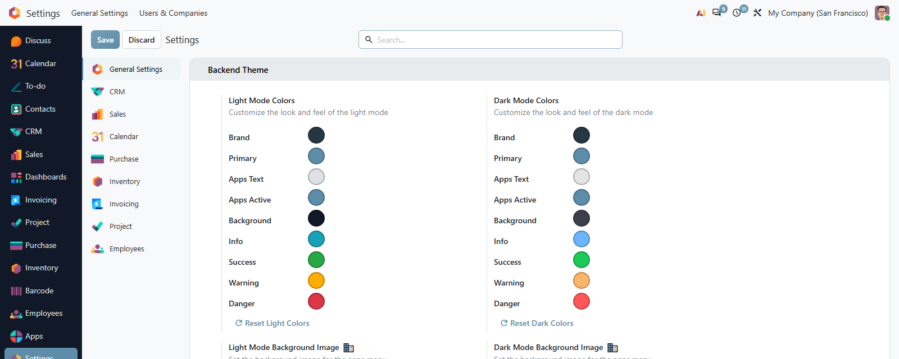
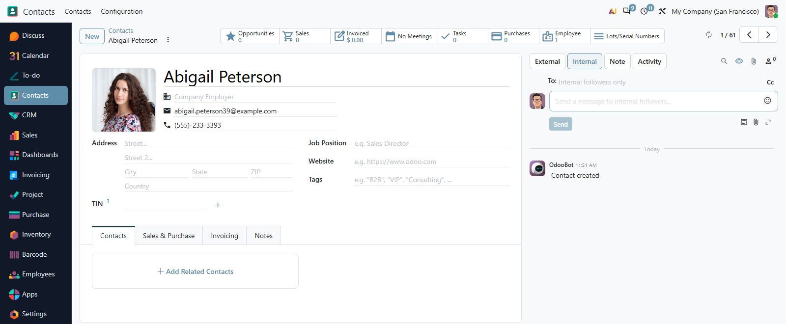
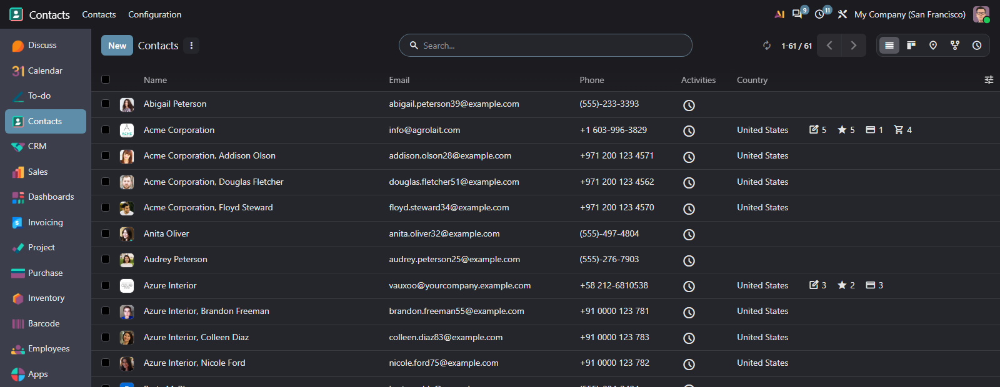
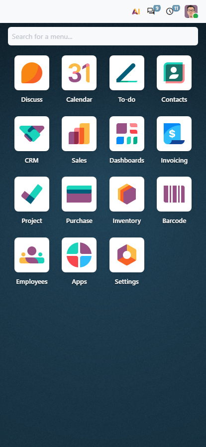
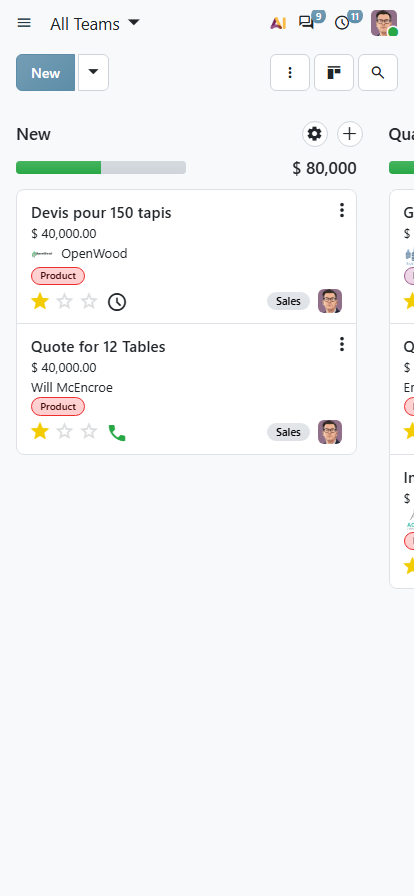
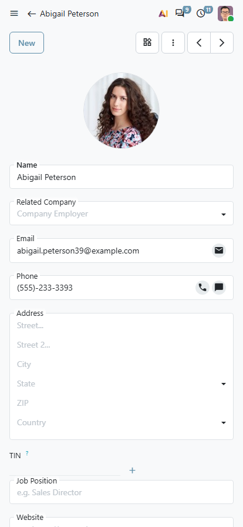
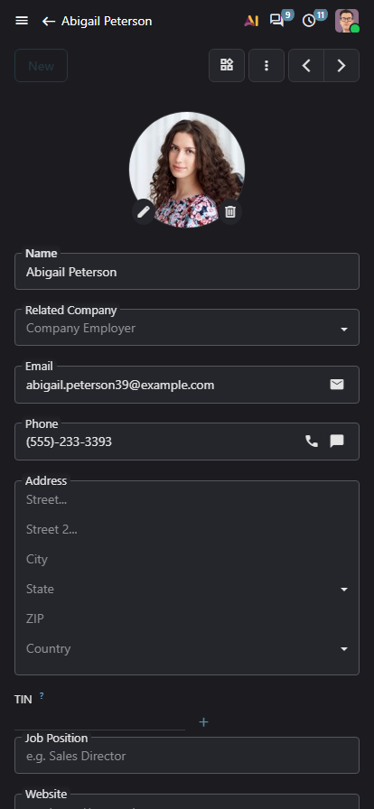
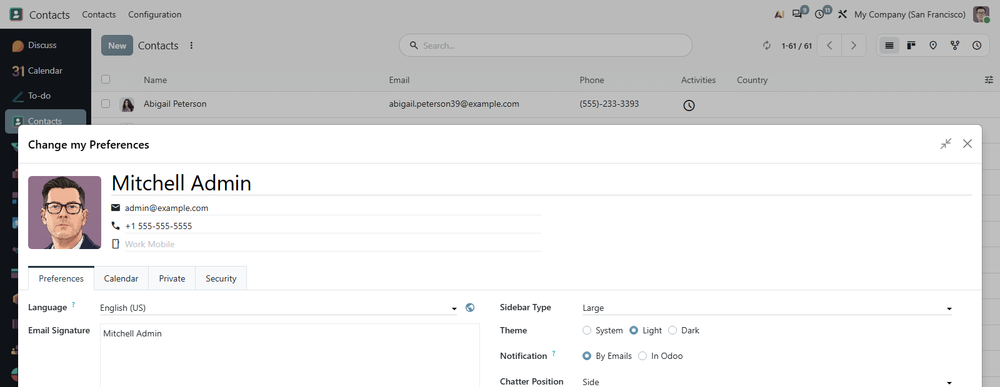

Every app in a bar down the side, your own background on the home menu, and a full palette for light and dark mode set from the settings — not forked into the source.
Every app the user may open sits in a bar down the side, in the order they arranged them, one click from anywhere.
Brand colours, both home-menu backgrounds and the favicon are company settings, so an upgrade has nothing to merge.
The app bar, the colours, the chatter, the dialogs, the group controls and the refresh button all arrive together.

The look is the visible part. Installing it also brings five modules that change how the backend is used, each of them a listing of its own.
Apps down the side at every width, and a background image on Odoo's home menu, set per company, one for light mode and one for dark.
Brand, primary and the context colours, plus the bar's own palette, for light and dark mode alike, reset in one click.
The history moves to the side, so the form keeps its full width. Each user chooses where it sits.
A control in every dialog header, and a preference for the size dialogs open at.
Open a whole grouped tree, at every level, or fold it back, from the cog menu of any list or kanban.
A button beside the pager reloads the view in place, and a double-click keeps it current on a timer.

Pick the colours and the backend follows, everywhere. Light mode and dark mode each keep their own palette. The values are written into a customized asset, so nothing in the module is edited and an upgrade has nothing to merge. One button puts every colour back.
Both backgrounds and the favicon follow the company. The sidebar width, the chatter position, the dialog size and the colour scheme are each user's own.

Dark mode is not left to the defaults. The app bar and the context colours carry their own dark palette, and the home menu takes its own dark background image, set in the same settings block as the light one and stored as its own asset.
Each user picks the scheme from their own preferences, and the backend follows with the colours the company set.






What you get for free, and what has to be paid work.
Issues and merge requests are welcome on the public repository. They are read — but no response time is promised.
A theme built to your brand, or a fix on a deadline, is paid work — quoted up front. Write to sale@mukit.at.
LGPL-3. Use it, change it, ship it inside your own work — no licence key, no database count.
Modules written for your process, on your Odoo version.
Odoo joined up with the systems you already run.
Hosting, deployment and upgrades you do not have to watch.
Your team taught the parts of Odoo they actually use.
An agreement, so an answer does not depend on who is free.
Odoo.sh or on-premise. Odoo Enterprise only — it cannot be installed on Odoo Community.
None to start. The colours, background and favicon are under Settings › General Settings.
Pulls in the app bar, colours, chatter, dialog, group and refresh modules. Nothing external.
Install it and the backend changes. Each user sets their sidebar, chatter and dialog size in Preferences.
Colours live in a customized asset, not in the source, so there is nothing to merge.
MuK IT GmbH, Vienna. Author and maintainer.
Send us your palette and the screens your teams live in, and we will tell you what the settings already cover and what wants building. MuK IT — Austrian Odoo partner, Vienna.